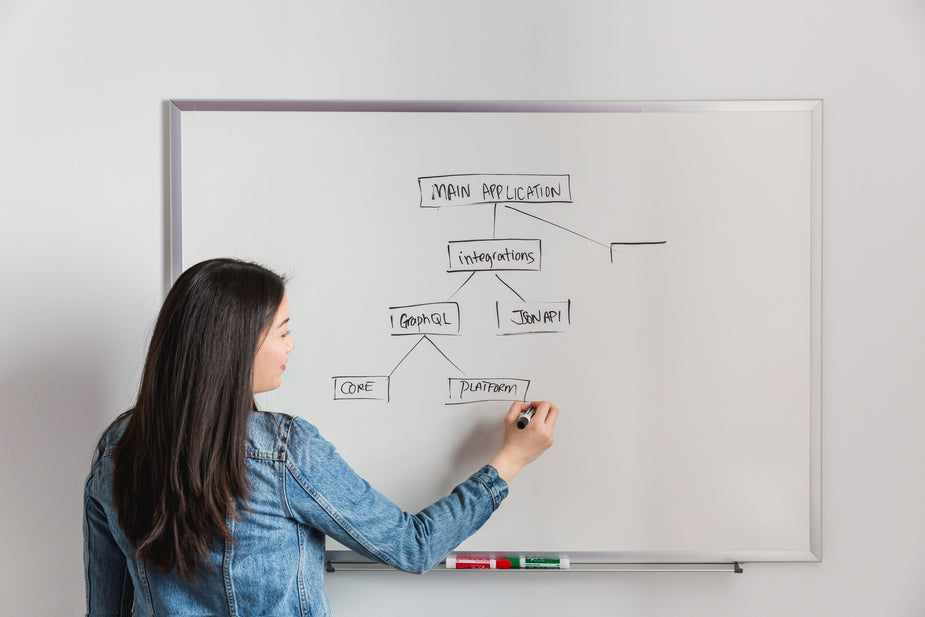

前言
在社團的人脈幫助下，在大二的暑假我成功申請到了遠東暑期實習的機會，其中我所擔任的角色是python組的組長。
python組具體要做的事情就是優化公司現有的推薦系統，將系統的推薦正確率以及運行速度提升到一定的目標。
專案前期準備(制定計畫)
由於是第一次進行編程相關的實習，加上又是遠距，組員也是不認識的學長，難免會有一些對進度方面的緊張。
為了方便追蹤每周的進度，導師們在一開始就讓我們制定出計畫表，把大目標拆成小目標，比起一口氣衝到終點，這種設定小目標的方式更能給予我們容錯及修改方向的空間，事實也證明，往往一個專案會需要經過反覆地推翻以及功能迭代。

專案第一周(架設環境，突發狀況)
很幸運的，我們不用從頭開始製作專案，導師那邊會提供需要優化的系統，我們可以說已經站在了巨人的肩膀上，只要想辦法爬到頭頂就好。
不過代價便是我們需要花時間研究系統，光是處理環境的問題就夠頭大的了。
系統主體以nodeJS運行在網頁上，主要推薦功能因為涉及到機器學習所以使用python進行處理，在了解功能時遇到了問題也必須盡快向專案導師確認(因為他這周結束就要辭職了Q-Q)。
在這周遇到最大的問題就是公司資料的處理，可以分為三個階段
- 打開資料出現亂碼--excel從文字匯入解決
- 匯入資料庫出現編碼錯誤--另存新檔，轉換為可以匯入的csv
- 成功匯入資料庫後文字為亂碼--無法解決，最後將所有簡體字換成繁體字因應
這周可以說是最手忙腳亂的一周，所有事情從頭開始，因為遇到超多問題而且又是遠距，所以幾乎每天都從早上起床做到晚上睡覺，壓力十分大。
不過我也從中學到了最基本的事情，控制好自己的時間，不要上班打卡制下班責任制，工作永遠做不完，你必須為自己設定好停損點，在生活與工作中取得平衡。
設定每周目標的標準是:在正常工作狀態下預期可以達到的進度。達不到進度表示預期太高，下次可以調低目標，而不是調高工作時間。
專案第二周(思考解決辦法，動手嘗試)
(不便透漏公司系統的功能，所以相關訊息都簡略帶過)
總之這一周就是正式撰寫解決問題的功能代碼了，說實話我看到資料也是一點頭緒也沒有，最後我選擇的方式是先模仿目前已有的推薦功能，理清功能的邏輯，重寫相關演算法。
可能是我一開始方法找對了，連資料都沒怎麼做清洗，拿去測試發現正確率幾乎快達到標準，接下來的過程就是不斷進行迭代，修復已知bug，功能優化。
也許是因為看到了完成的曙光，我開始緩下腳步，不再埋頭苦做，把目光放到組員身上，協助組員解決遇到的問題。
也是在協助組員的過程中，我收到了第一筆的諮詢費，他告訴我，沒有人有義務替你解決問題，尤其是代碼相關的問題。常常需要花費好幾個小時debug，給諮詢費也是為了建立長久的合作關係。

專案第三周(學習新知，拓展視野)
這周主要在研究機器學習的模型，因為還不熟練，就算上網找了一堆資料還是做不出來。
在這個階段我們使用colab來進行，因為colab有提供免費GPU使用，訓練模型的速度會比較快速。
由於是線上環境，可以運行想要的代碼，也對補充註解不太在意，所以造成了後續小組間合併專案時的困擾，發生了許多雙方的代碼衝突的問題。
專案第四周(理論應用，彈性因應)
值得一說的部份是發生了新增加的功能與原先的系統衝突。
好不容易在colab上訓練好的深度學習的模型，但是放入系統後卻出現了系統崩潰，原因發生在js與python串接的地方，
當時有想到兩個解決辦法，放棄現在做出來的模型，或者修改系統讓bug不要發生。評估兩個方案所要承擔的風險與效益後，我決定放棄花了一周時間做出來的模型，原因有幾點:
- 我對javascript語法沒有很熟悉，修改難度太大
- 不做深度學習還可以做機器學習等其他不會發生bug的模型
- 因為不了解公司業務邏輯，所以盡量避免碰觸到系統核心運作方式
在做團隊專案時，要考慮的地方不只是在本機端系統跑不跑的了，也要考慮如果遷移到其他的電腦系統能不能順利運行，或許深度模型組員那邊可以跑的了，但只要有會影響系統的穩定的疑慮，我一律是不採用的。
專案第五周(調整計畫，迭代功能)
這周遇到的問題是，組內的進度跟原先計畫開始有些脫鉤，導致在班會報告小組進度時無法明確地說出我們這周的進度和原先計畫的關聯。
後來和組員溝通後，重新根據組內的狀況調整之後的進度。
臨時的更改進度可能導致組員做出的成果派不上用場，所以平時組內的溝通會十分重要，定期掌握組員的進度，確認組內的前進方向與目標是否一致，會是組長的職責。
專案第六周(合併進度，測試系統)
要如何寫出讓人看得懂的代碼呢? 專案逐漸接近尾聲，也是時候開始合併小組的代碼了。
每個人寫代碼的習慣都不一樣，雖然python可以寫class，但是大家都不太會寫有關OOP(物件導向、面相對象)的代碼，最後得出的結論是:def。
藉由把代碼包裝成一個個def功能區塊，可以讓自己重新審視自己的代碼，將其拆分成相對獨立的物件，如此一來其他人在閱讀的時候也可以比較輕鬆的了解。
或許這個方法不太專業，但這是當時能夠想到最簡單讓代碼比較容易被使用及閱讀的辦法了。

專案第七周(專案收尾，發想其他功能)
因為組內的專案要求幾乎都已達標，所以正發想剩下的一周半時間有甚麼其他的事情可以做。
最終考量到使用該專案的使用者不會想碰代碼，所以計畫做一個網頁，讓使用者可以直接透過網頁來進行所有有關資料與模型的操作。
為此自己花了2~3天的時間把vue的基礎大致看過，期望可以做出一個美觀又實用的網頁!
結果到了班會的時候，我才知道我思考的擴展功能有誤，公司是使用資料庫來獲取資料，所以不會有上傳檔案的動作，所以花了三天時間做的功能根本派不上用場。
這件事讓我學到一個經驗，在嘗試做一件新的事情時，要先和對方溝通過，確保這件事情是有價值的，最後才不會白用功。
專案第八周(新增功能，撰寫文件，準備交接，實習結束)
這周的前兩天，我開始瘋狂的研究vue，並成功做出了其中一項擴展功能，因為時間不足再加上拓展使系統太複雜，效益又不大，所以後來決定放棄拓展功能，先去撰寫交接文檔。
在撰寫文檔的過程中，要對系統做詳細的說明，所以能發現很多可以修改的地方，例如之前測試用的檔案，在正式交接的系統中不會用到的部分，都需要做清理與刪除。
這階段學到的技術是如何撰寫一份合格的交接文件，在撰寫的過程中，有幾點可以注意:
- 清楚說明檔案的用途及系統的環境設定，讓交接人員可以很快接手系統
- 若有涉及到複雜的資料處理或運算，因為這部分容易涉及到實務經驗與業務需求，需詳細說明整體思路
- 若能附上影片進行補充說明會更好
根據專案的不同所需要注意的地方也會跟著改變，可以試著切換立場，假設自己是要接手的人員，希望能知道甚麼內容?
交接完之後實習差不多也告一段落了，實習薪水不算多，不過卻能從與導師們開會的過程中學到很多職場知識，十分適合還不熟悉開發專案的同學進行嘗試
感言
這次實習的工作量我認為不會很大，有充足的時間去自我學習、探索，也有時間去思考這是不是自己期待的職場環境。
我在實習過程中碰到許多大大小小的挫折以及團隊溝通的問題，其中讓我印象深刻的問題是最後一周的vue功能造成系統太過複雜，必須不斷的修改原先已完成差不多的代碼，結果反而弄巧成拙，
自己的系統不知道出了甚麼bug，導致excel寫入不完全，最後只能讓組員來進行最後的演示，無法自己親自說明實屬遺憾。
也因為這個bug，我發現了自己的不足之處，只會用別人寫好的套件，所以當套件因為不明原因出了問題，我也無法進行解決。
另外我也發現了自己數學基礎的不足，做更底層的演算法。會無能為力。
今年要升大三的我，還有時間可以學習與改變，但如果不去嘗試，永遠不會知道自己的問題出在哪裡，
2022暑期實習到此告一段落，感謝上海遠資的導師以及數理資訊社的成員在這個暑假給我的各種支持與幫忙!
完成時間:2022/8/29